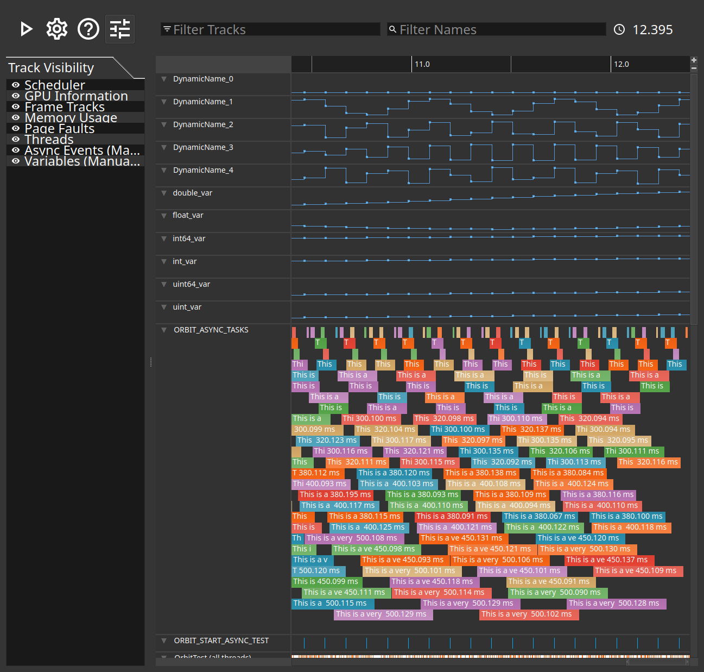

Configuring tracks
Which kinds of track are shown, and in what order.
A capture of a real application has more tracks than fit on a screen. The track configuration pane, opened from the View menu, turns whole categories of track on and off and reorders what is left, so that what matters for the question at hand is next to each other.
